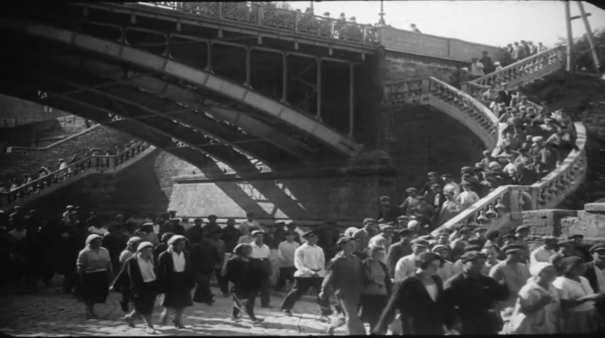

Battleship Potemkin, frame at 37:37
Sergei Eisenstein · 1925 · Silent film, black and white (frame)
Free to use
The film was commissioned for the twentieth anniversary of the 1905 revolution and handed to Sergei Eisenstein, then 27. Fog stopped the shoot in Leningrad, and with the film due by the end of the year he dropped seven of the script's eight episodes to make only the mutiny, shooting it in Odessa. He cast many non-professional actors, choosing people of specific types rather than stars.
Open in The ArtchiveFull-size file ↗